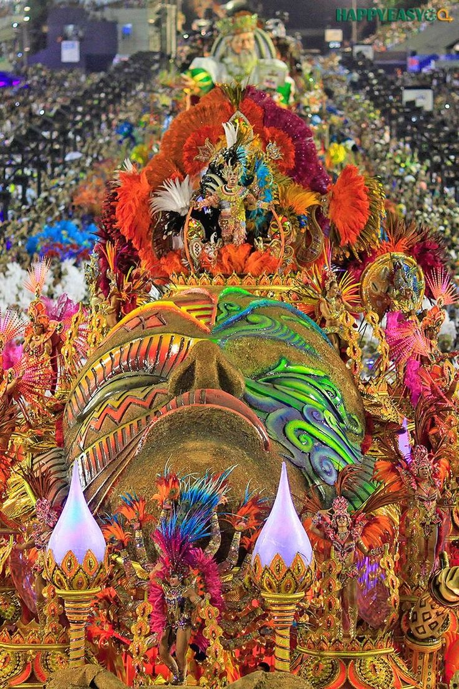
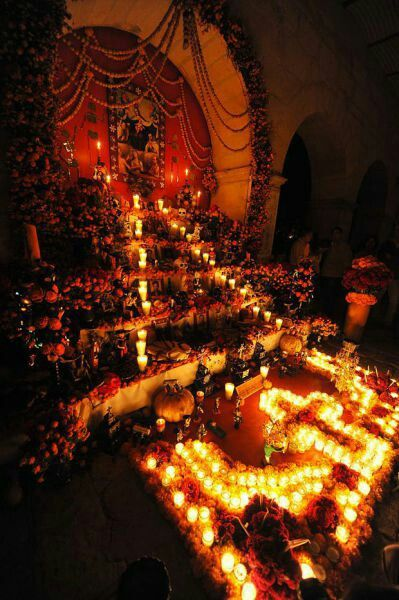
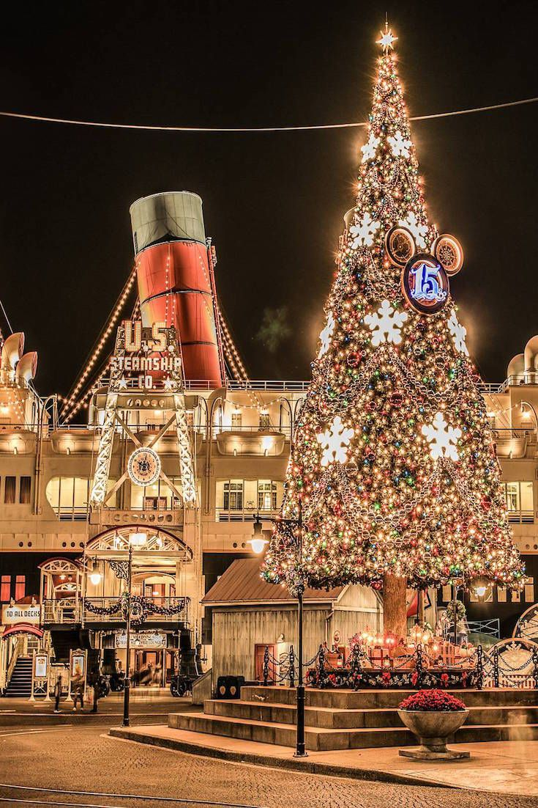

Conozcamos los Distintos eventos especiales que ocurren alrededor del mundo
Let's get to know the Carnival
Carnival is celebrated in the vast majority of South American countries. Carnival is a festival linked to the Christian calendar that was originally intended as a period of excess and debauchery before Lent, a time of austerity and abstinence. The spread of Christianity brought the festival to many places in America, where it mixed with various local traditions. known as a time of debauchery, fun and happiness.

Let's know the Day of the Dead
The Day of the Dead, Day of the Souls, Day of the Saints or Day of the Dead. It is a celebration celebrated around the world. Mainly highlighting Mexico All family members, friends and/or acquaintances are commemorated and remembered. who have already passed away, saying that is a way of remembering them and giving them, so to speak, A day for the dead, Depending on the country, customs usually change, but we do generalize. People usually offer food of all kinds. Thus implying that the deceased come down and They enjoy the offerings.

Let's know Christmas
Christmas, Christian holiday that commemorates the birth of Jesus Christ It is celebrated on December 25 according to the Gregorian calendar. But despite its religious origin This holiday is commonly celebrated even by atheists as a date dedicated to meeting those closest to you. and spend a day of celebrations and fun. Being some of the most characteristic characters of this celebration. Santa Claus, San Nicolas, Jesus, among many others.
